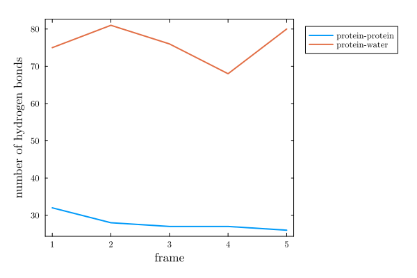
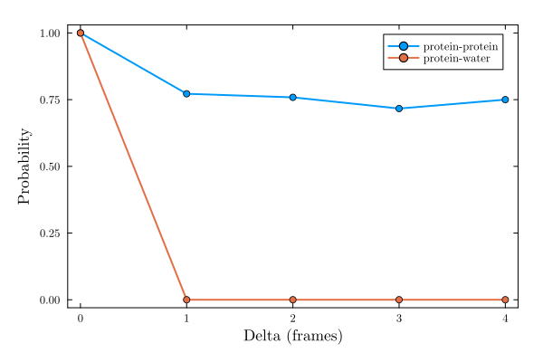

Hydrogen bonds
Computes the number of hydrogen bonds of a set of atoms, or between two sets of atoms, for each frame in a simulation.
PDBTools.hydrogen_bonds — Function
hydrogen_bonds(sim::Simulation, sel1, sel1 => sel2,...; kargs...)Function to compute the number of hydrogen bonds per frame in a simulation.
Arguments
sim::Simulation: TheSimulationobject.
and, optionally,
- a list of selections, or pairs of selections, given as selection strings. Examples:
"protein","protein" => "water", etc.
If no selection is provided, the hydrogen bonds among all atoms are computed. If two selections of a pair are different, their atoms must not overlap (an error will be thrown).
Returns
- An ordered dictionary in which the key specifies the selections and the values are vectors with the number of hydrogen bonds in each frame.
Optional keyword arguments
parallel::Bool=true: Defines if the calculation is run in parallel. Requires starting Julia with multi-threading.donnor_acceptor_distance::Real=3.5f0: Maximum distance between donnor and acceptor to consider a hydrogen bond.angle_cutoff::Real=30: Maximum angle (in degrees) between donnor-hydrogen-acceptor to consider a hydrogen bond.electronegative_elements=("N", "O", "F", "S"): Elements considered electronegative for hydrogen bonding.d_covalent_bond::Real=1.2f0: Maximum distance between donnor and hydrogen to consider a covalent bond.
Example
julia> using MolSimToolkit, MolSimToolkit.Testing
julia> sim = Simulation(Testing.namd_pdb, Testing.namd_traj);
julia> hbs = hydrogen_bonds(sim, "protein")
OrderedCollections.OrderedDict{String, Vector{Int64}} with 1 entry:
"protein => protein" => [32, 28, 27, 27, 26]
julia> hbs = hydrogen_bonds(sim, "protein" => "water")
OrderedCollections.OrderedDict{String, Vector{Int64}} with 1 entry:
"protein => water" => [75, 81, 76, 68, 80]
julia> hbs = hydrogen_bonds(sim, "protein", "protein" => "water", "water" => "resname POPC")
OrderedCollections.OrderedDict{String, Vector{Int64}} with 3 entries:
"protein => protein" => [32, 28, 27, 27, 26]
"protein => water" => [75, 81, 76, 68, 80]
"water => resname POPC" => [413, 403, 406, 392, 376]Example
using MolSimToolkit, PDBTools
using MolSimToolkit.Testing # to load test files
using Plots
# Build Simulation object
sim = Simulation(Testing.namd_pdb, Testing.namd_traj)
# Compute h-bonds of the protein with itself
hbs_prot = hydrogen_bonds(sim, "protein")
# Compute h-bonds between protein and water
hbs_prot_water = hydrogen_bonds(sim, "protein" => "water")
# Plot
plot(MolSimStyle,
[hbs_prot["protein => protein"] hbs_prot_water["protein => water"]];
xlabel="frame",
ylabel="number of hydrogen bonds",
label=["protein-protein" "protein-water"],
legend=:outertopright,
)
Alternativelly, multiple selections, or pairs of selections can be provided, for faster computations,
hbs = hydrogen_bonds(sim,
"protein",
"protein" => "water",
"protein" => "resname POPC",
)OrderedCollections.OrderedDict{String, Vector{Int64}} with 3 entries:
"protein => protein" => [32, 28, 27, 27, 26]
"protein => water" => [75, 81, 76, 68, 80]
"protein => resname POPC" => [0, 1, 4, 5, 6]The result can be converted directly to a DataFrame
using DataFrames, CSV
df = DataFrame(hbs)| Row | protein => protein | protein => water | protein => resname POPC |
|---|---|---|---|
| Int64 | Int64 | Int64 | |
| 1 | 32 | 75 | 0 |
| 2 | 28 | 81 | 1 |
| 3 | 27 | 76 | 4 |
| 4 | 27 | 68 | 5 |
| 5 | 26 | 80 | 6 |
and saved to CSV file with CSV.write("hbonds.csv", df).
The order of the pairs, e. g. "protein" => "water" or "water" => "protein", does not affect the result, as electronegative atoms of both groups will be considered as possible hydrogen bond donnors and/or acceptors.
When a single selection is provided, e. g. "protein", the hydrogen bonds within that selection are computed, with no repetitions.
Hydrogen bond occupancy
The hydrogen_bond_occupancy function performs the same computation as hydrogen_bonds, but instead of only counting the hydrogen bonds of each frame, it keeps track of the identity (donnor, polar hydrogen, and acceptor atoms) of every hydrogen bond found. This makes it possible to follow individual hydrogen bonds along the trajectory, in the same way that occupancy tracks individual solvent molecules at a binding site.
MolSimToolkit.hydrogen_bond_occupancy — Function
hydrogen_bond_occupancy(sim::Simulation, sel1, sel1 => sel2,...; kargs...)Function to compute, for each frame of the simulation, which hydrogen bonds are present, keeping track of the identity of the donnor and acceptor atoms involved. This is the same computation performed by hydrogen_bonds, except that instead of just counting the hydrogen bonds of each frame, their identities are retained, so that, for instance, the persistence of a given hydrogen bond along the trajectory can be studied with intermittent_correlation.
A hydrogen bond is considered to be the same along the trajectory only if it is formed by the same donnor, polar hydrogen, and acceptor atoms.
Arguments
Identical to those of hydrogen_bonds.
Returns
- An ordered dictionary in which the key specifies the selections and the values are
HydrogenBondOccupancyobjects.
Optional keyword arguments
Identical to those of hydrogen_bonds.
Example
julia> using MolSimToolkit, MolSimToolkit.Testing
julia> sim = Simulation(Testing.namd_pdb, Testing.namd_traj);
julia> hbo = hydrogen_bond_occupancy(sim, "protein", show_progress=false);
julia> length.(hbo["protein => protein"].list)
5-element Vector{Int64}:
32
28
27
27
26
MolSimToolkit.HydrogenBondOccupancy — Type
HydrogenBondOccupancyStructure that wraps the result of the hydrogen_bond_occupancy function.
Fields
list::Vector{Vector{HBond}}: for each frame of the simulation, the list ofHBonds found in that frame.
MolSimToolkit.HBond — Type
HBondIdentifies a single hydrogen bond by the (global) atom indices of the donnor, polar hydrogen, and acceptor atoms involved. Two HBonds compare equal (and hash equally) if, and only if, all three atom indices match.
Statistics.mean — Method
mean(hbo::HydrogenBondOccupancy)Returns the average number of hydrogen bonds found per frame.
Example
using MolSimToolkit, MolSimToolkit.Testing, Plots
sim = Simulation(Testing.namd_pdb, Testing.namd_traj)
hbo = hydrogen_bond_occupancy(sim,
"protein",
"protein" => "water";
show_progress=false
)OrderedCollections.OrderedDict{String, HydrogenBondOccupancy} with 2 entries:
"protein => protein" => HydrogenBondOccupancy(Vector{HBond}[[HBond(111, 112, 78), HBond(36, 37, 30), HBond(580, 581, …
"protein => water" => HydrogenBondOccupancy(Vector{HBond}[[HBond(12487, 12489, 200), HBond(8713, 8714, 200), HBond(…The list field contains, for each frame, the HBonds found in that frame:
hbo["protein => water"].list5-element Vector{Vector{HBond}}:
[HBond(12487, 12489, 200), HBond(8713, 8714, 200), HBond(17650, 17651, 93), HBond(10918, 10919, 71), HBond(31, 33, 12967), HBond(45, 46, 16381), HBond(15208, 15209, 30), HBond(599, 601, 15625), HBond(599, 600, 14890), HBond(15817, 15819, 579) … HBond(17752, 17754, 35), HBond(13699, 13701, 44), HBond(15175, 15177, 44), HBond(22, 23, 14881), HBond(13948, 13949, 21), HBond(574, 575, 7777), HBond(574, 577, 14188), HBond(574, 576, 17179), HBond(20422, 20424, 60), HBond(61, 62, 9028)]
[HBond(200, 201, 18991), HBond(17275, 17277, 200), HBond(11824, 11826, 200), HBond(17086, 17088, 93), HBond(18754, 18755, 93), HBond(8701, 8702, 78), HBond(72, 73, 9082), HBond(14005, 14007, 579), HBond(18694, 18696, 579), HBond(14869, 14870, 120) … HBond(9082, 9084, 49), HBond(36, 37, 16411), HBond(12514, 12516, 21), HBond(19987, 19989, 91), HBond(19672, 19674, 91), HBond(16105, 16107, 91), HBond(31, 32, 16105), HBond(574, 575, 19612), HBond(574, 577, 17023), HBond(574, 576, 19936)]
[HBond(200, 201, 12994), HBond(13465, 13467, 78), HBond(72, 73, 15838), HBond(15667, 15668, 71), HBond(8521, 8523, 71), HBond(11446, 11448, 71), HBond(10300, 10301, 695), HBond(11683, 11684, 695), HBond(14119, 14121, 695), HBond(8485, 8487, 695) … HBond(19366, 19367, 49), HBond(22, 23, 14275), HBond(15532, 15534, 57), HBond(57, 58, 12439), HBond(574, 577, 19960), HBond(574, 576, 13057), HBond(13330, 13332, 60), HBond(12271, 12272, 60), HBond(31, 32, 12880), HBond(19126, 19127, 31)]
[HBond(11836, 11838, 119), HBond(18679, 18680, 119), HBond(18925, 18927, 120), HBond(18643, 18644, 120), HBond(17824, 17826, 119), HBond(18973, 18974, 120), HBond(17824, 17825, 78), HBond(79, 80, 9304), HBond(45, 47, 15520), HBond(45, 46, 17092) … HBond(574, 575, 11800), HBond(574, 576, 17926), HBond(72, 73, 13033), HBond(19804, 19805, 68), HBond(68, 69, 18679), HBond(10486, 10488, 44), HBond(17872, 17873, 71), HBond(14218, 14220, 21), HBond(17872, 17874, 30), HBond(22, 23, 8224)]
[HBond(18862, 18864, 200), HBond(200, 201, 14305), HBond(12415, 12417, 200), HBond(79, 80, 13606), HBond(8575, 8576, 78), HBond(13594, 13596, 91), HBond(14257, 14258, 91), HBond(599, 600, 10198), HBond(14650, 14651, 658), HBond(14416, 14418, 658) … HBond(12022, 12023, 696), HBond(18463, 18464, 695), HBond(13870, 13871, 695), HBond(14473, 14474, 695), HBond(697, 698, 18148), HBond(707, 708, 18373), HBond(16798, 16799, 707), HBond(72, 73, 16351), HBond(16798, 16800, 677), HBond(19729, 19730, 677)]and the average number of hydrogen bonds per frame is obtained, as usual, with mean:
mean(hbo["protein => protein"])28.0Persistence of hydrogen bonds
Because each HBond retains the identity of the donnor, hydrogen, and acceptor atoms involved, intermittent_correlation can be applied directly to a HydrogenBondOccupancy, to estimate the probability that a given hydrogen bond found at some frame is still present delta frames later (allowing the bond to break and reform in between):
ic_prot_prot = intermittent_correlation(
hbo["protein => protein"]; maxdelta=4, show_progress=false
)
ic_prot_water = intermittent_correlation(
hbo["protein => water"]; maxdelta=4, show_progress=false
)5-element OffsetArray(::Vector{Float64}, 0:4) with eltype Float64 with indices 0:4:
1.0
0.0
0.0
0.0
0.0plot(MolSimStyle,
0:4,
[ic_prot_prot ic_prot_water],
xlabel="Delta (frames)", ylabel="Probability",
linewidth=2, marker=:circle,
label=[ "protein-protein" "protein-water" ],
)
In this case, protein-water hydrogen bonds do not survive enough to be found on consecutive frames saved from the trajectory, but protein-protein hydrogen bonds do. The characteristic times of these decays can be obtained by fitting exponential decays, as shown in the Characteristic residence time section.